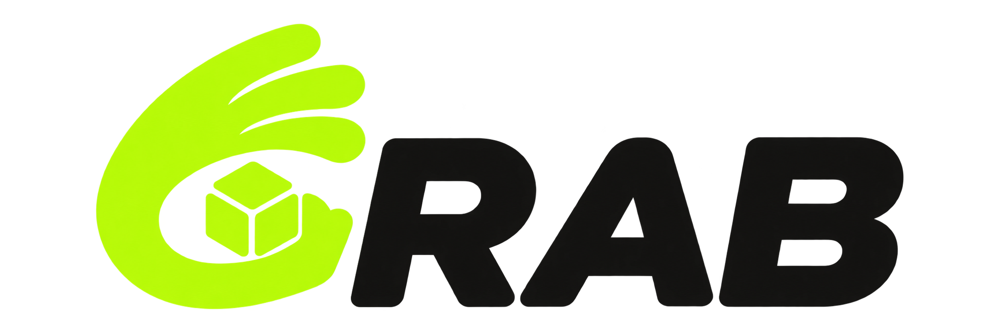

정해진 시각에 한정 수량 상품을 판매하는 DROP 커머스 서비스입니다. WISH, 주문, 결제, 배송까지 이어지며, 오픈 시각에 요청이 한꺼번에 몰린다는 점이 서비스의 특징입니다.
- 기간 · 인원
- 2026.09.22 ~ 2026.11.04 (약 6주) · 4명
- 담당
- 회원·인증 전 영역 (설계, API, 프론트 연동, 부하 측정·개선), 백엔드 초기 환경 구성
- 기술
- Java 17
- Spring Boot 4
- Spring Security
- JPA
- PostgreSQL
- Redis
- Caffeine
- React
- Docker
- GitHub Actions
- k6
- 저장소
- GitHub
핵심 성과
전체 서비스 구성
시스템 아키텍처 보기

핵심 사례 01
동시 로그인으로 발생한 메모리 부족을 해시 실행 제한으로 개선
문제
로그인 요청마다 비밀번호를 검증하는 해시 연산에 메모리가 필요했습니다. 여러 검증이 동시에 실행되면서 힙이 부족해졌고, 로컬 부하 테스트에서 요청 실패와 서버 응답 불가를 재현했습니다.
원인
- 비밀번호 해시 Argon2id(메모리 19MiB, OWASP 최소 권장값)는 해시 1건이 진행되는 동안 힙 약 19MiB를 붙잡습니다. BouncyCastle 바이트코드로 확인했습니다.
- GC 로그로 Full GC 직후 힙을 보니, 동시 해시가 약 25건을 넘으면 힙 한도에 닿아 Full GC가 반복되고 요청이 실패했습니다.
- 가입 여부를 숨기려고 없는 계정도 더미 해시로 검증하므로, 틀린 비밀번호 요청도 같은 비용이 들었습니다.
해결
적용한 비밀번호 해시 강도를 유지하면서 PasswordEncoder를 감싸 해시를 동시에 4건까지만 실행하도록 했습니다.
- 동시에 진행되는 해시 수를 제한해 메모리 사용을 줄이고, CPU에서 처리할 수 있는 작업을 순차적으로 실행하도록 했습니다.
- 해시 연산을 기다리는 요청에 대기 순서대로 실행 기회를 부여하고, 3초 안에 차례를 얻지 못하면 503과 Retry-After를 반환했습니다.
- 로그인·더미 해시·가입·비밀번호 변경에 같은 실행 제한을 적용했습니다.
결과
(같은 환경·시나리오로 재측정)
수치는 1차·2차 측정 순서입니다.
모든 축은 0에서 시작합니다. 회색은 개선 전, 녹색은 개선 후이며, 막대 끝의 빗금은 두 측정값 사이의 범위입니다.
로컬 테스트 · CPU 2개 · 메모리 1GiB · 힙 550MiB · 80건 일제 로그인. 별도 반복 부하 VU 80에서는 대기 초과로 11.6%를 거절했습니다.
재현 조건과 반복 부하의 메모리 측정
DROP 오픈 직전에 로그인이 몰리는 상황을 k6로 재현했습니다. 운영보다 약한 t3.micro 기준(메모리 1GiB, CPU 2개, 힙 550MiB)에서 로그인 80명이 동시에 몰리자 p95가 26.1초까지 늘고 29건이 실패했습니다. 힙 OOM으로 Tomcat 스레드가 죽어, 재시작 전까지 서버가 응답하지 않은 적도 있었습니다.
보조 검증: 반복 부하에서의 힙 사용
micro·G1 환경에서 로그인 요청을 30초간 반복한 결과도 비교했습니다. 실제 이용 패턴과는 구분하며, 해시 연산이 계속 유입될 때 메모리 압박을 확인하는 보조 검증입니다.
VU 40 조건에서 Full GC 직후 힙은 422MiB에서 124MiB로, 관측 최댓값은 544MiB에서 137MiB로 줄었습니다. VU별 응답시간과 상세 측정 조건은 아래 개선 전·후 측정 자료에 정리했습니다.
반복 부하 VU 80의 개선 후 측정에서는 대기 한도 초과로 98건(11.6%)을 거절했습니다. 동시 실행 제한은 과부하 시 일부 요청을 거절하는 비용이 있습니다.
핵심 사례 02
같은 회원을 반복 조회하던 비용을 줄여 DB 연결 대기 완화
문제
로그인한 회원을 식별하기 위한 같은 DB 조회가 인증 요청마다 반복됐습니다. 토큰에 담긴 외부 식별자 publicId를 서비스에서 사용하는 내부 userId로 변환하는 과정이었습니다.
원인
내 정보 조회에는 ID 변환과 회원 정보 조회가 필요했습니다. 두 작업이 별도 트랜잭션으로 실행되어 DB 연결을 두 번 빌렸습니다. DB 왕복 지연 약 3ms의 로컬 환경에서는 가상 사용자 800명부터 연결 풀이 포화되며 대기가 늘었습니다.
해결
ID 매핑 캐시와 캐시 누락 경로 개선을 함께 적용했습니다.
- 캐시 대상과 위치: 변경되지 않는 publicId → 내부 userId 매핑만 Caffeine 로컬 메모리에 저장했습니다. 적중하면 ID 변환을 위한 DB 접근이 사라집니다. 원격 캐시의 네트워크 왕복도 추가하지 않습니다.
- 캐시 범위: 회원 행과 ID 매핑을 유지하는 정책에 맞춰 TTL을 생략하고, 최대 10만 항목으로 제한했습니다. 없는 회원은 저장하지 않습니다.
- 첫 요청 비용: ID 변환 서비스의 읽기 트랜잭션을 제거했습니다. 캐시가 비어도 자동 커밋 SELECT 한 문장으로 조회합니다. JWT에 내부 ID를 넣는 방법은 기존 Claim 계약과 충돌해 제외했습니다.
- 회원 상태 확인: 캐시는 ID 매핑만 보관합니다. 내 정보 조회는 계속 DB에서 회원 정보를 읽고 정지·탈퇴 상태를 확인합니다.
DB 왕복은 SELECT 횟수와 다릅니다. 쿼리 실행뿐 아니라 트랜잭션 시작·종료에도 DB 통신이 발생합니다. 여기서는 네트워크 지연 전후의 응답시간 차이로 왕복 수를 추정했습니다.
검증
PostgreSQL 로그와 pg_stat_statements로 트랜잭션 경계·문장 수를 확인하고, netem 지연 전후 응답시간 차이로 DB 왕복 수를 추정했습니다. 캐시 적중 경로에서는 ID 변환 SELECT가 사라졌고, 누락 경로에서는 별도 BEGIN·COMMIT 없이 SELECT 한 문장만 실행됐습니다.
결과
(GET /api/v1/users/me, 같은 날 전후 교대 측정)
요청당 트랜잭션: 약 2개 → 약 1개. 개선 후 DB 왕복·트랜잭션 수는 회원 ID가 캐시에 이미 저장된 요청 기준입니다.
응답시간·처리량·DB 연결 획득 시간은 각 조건을 두 번 측정한 값의 범위입니다. 빗금은 두 측정값 사이를 나타냅니다. 모든 축은 0에서 시작하며 지표별 눈금은 다릅니다.
검증 결과: 개선 후 교대 측정의 캐시 누락 비율은 0.32%였고, 네 실행 모두 요청 실패·401·커넥션 타임아웃은 0건이었습니다.
- 해석: 반복 ID 조회를 제거해 커넥션 점유와 대기를 줄였습니다. 낮은 부하에서 줄어든 중앙값 약 6.4ms도 제거한 DB 왕복 약 2회와 맞았습니다. 위 성과는 캐시 도입과 조회 트랜잭션 제거를 함께 적용한 결과입니다.
설계 회고
이번 개선은 기존 JWT의 publicId와 내부 userId를 분리한 구조를 유지하면서 반복 조회 비용을 줄였습니다. 현재 구조를 돌아보면, 자체 발급 JWT에 내부 userId를 담아 ID 변환과 매핑 캐시 자체를 없애는 대안도 검토할 필요가 있습니다. 내부 PK 비노출 정책을 조정해야 하지만, 서비스가 사용하는 식별자와 인증 정보를 일치시켜 요청 처리와 유지보수를 단순화할 수 있습니다.
로컬 Docker · DB 왕복 지연 약 3ms · DB 연결 최대 10개 · 계정 800개 · 처리량은 VU 1600 기준. 개선 후 DB 왕복 수는 캐시 예열 기준이며, 캐시와 조회 트랜잭션 조정을 함께 적용한 결과입니다.
전체 측정 조건과 응답시간 지표
캐시 만료·용량과 메모리 측정
- 만료와 용량: ID 매핑이 변경되지 않고 탈퇴 시에도 회원 행을 유지하므로 TTL·명시적 무효화를 생략했습니다. 캐시는 최대 10만 항목으로 제한하고, 없는 회원은 저장하지 않습니다. 로컬 Java 17·Caffeine 3.2.4 환경에서 10만 항목을 적재한 뒤 측정한 캐시 객체 그래프는 약 13.45MiB로, 힙 상한 550MiB의 약 2.44%였습니다(공용 스레드풀 제외). Micrometer로 캐시 적중·누락·크기·자동 제거 횟수를 관측합니다.
인증 설계·구현
로그인 연장에 사용한 토큰을 한 번만 교체하도록 처리
로그인 상태를 연장할 때 사용하는 Refresh Token을 재발급마다 새 토큰으로 교체합니다. 같은 토큰으로 요청이 동시에 들어와도 한 요청만 교체에 성공하도록 Redis Lua로 처리했습니다.
A는 사용 전 Refresh Token, B는 새로 발급할 Refresh Token입니다.
- 01 · 클라이언트A로 재발급 요청Refresh Token을 쿠키로 전송
- 02 · 백엔드세션·회원 상태 확인새 Access Token과 B 준비
- 03 · Redis LuaA → B 원자적 교체A 삭제 · B 저장
사용 이력·현재 토큰 갱신 - 04 · 응답204 · 새 쿠키 설정새 Access Token과 B 전달
교체 경합에서 A 삭제에 실패한 요청은 새 토큰을 저장하지 않고 401로 거부합니다.
사용 이력이 없는 토큰도 401로 거부합니다. 10초가 지나는 것만으로 세션이 자동 폐기되지는 않으며, 이전 토큰이 다시 제출될 때 판정합니다.
- 원자적 교체: 기존 토큰 삭제, 새 토큰·현재 세션 정보 저장, 사용 이력 기록을 하나의 Redis Lua 스크립트로 처리했습니다. 기존 토큰 삭제에 성공한 요청만 교체를 진행하도록 했습니다.
- 재사용 처리 정책: 교체 후 10초 미만의 재사용은 요청만 거부하고, 10초 이상 지난 토큰이 다시 제출되면 해당 세션의 현재 Refresh Token을 폐기합니다.
통합 테스트 구성
Testcontainers 기반 Redis 통합 테스트에 같은 토큰의 동시 교체 20건 중 1건만 성공하는지, 유예 시간 안팎의 재사용과 세션 폐기가 정책대로 동작하는지 확인하는 시나리오를 작성했습니다.
한계: 재사용자의 정체를 판별하지 않으며, 10초 경과만으로 세션이 자동 폐기되지는 않습니다.
담당 업무 상세
구현한 기능과 환경 구성
- 인증·세션: HttpOnly 쿠키 기반 JWT 인증과 CSRF·CORS 정책, Redis Lua 기반 Refresh Token 교체와 세션 관리(로그인, 재발급, 로그아웃)
- 회원가입·회원 정보: 이메일 인증 회원가입, 카카오·구글 OIDC 로그인, 내 정보·프로필 이미지 API와 프론트엔드 연동
- 성능 측정 및 개선: k6 로그인·인증 API 부하 측정, Argon2 동시 실행 제한, 회원 ID 변환 캐시와 조회 트랜잭션 개선, 전후 재측정
- 환경 구성: Docker Compose 개발 환경, GHCR 이미지 배포 워크플로, 인증 API 명세